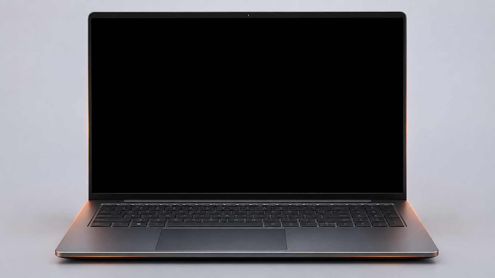

Phone Only
Shows a black overlay when a mobile phone is detected in your webcam’s view.
Download Phone Only
A little more privacy, right when you need it.
LaptopScreenGuard covers your display when your selected
webcam trigger is detected.
Windows 10 / 11 x64 · Python 3.12 · Preview build

Choose a trigger. The app displays a black overlay while the condition is active, then restores your screen when it clears.
With no trigger active, your workspace stays visible.
Interactive illustration. This page does not access your camera. Actual detection speed depends on your laptop and webcam.
Four standalone editions. Each download includes the app, installer, removal script, and a step-by-step guide.
Shows a black overlay when a mobile phone is detected in your webcam’s view.
Download Phone OnlyAdds checks for a dark, uniform, or missing webcam feed, including shutter-like changes.
Download Phone + ShutterIncludes phone and shutter checks, plus blurred, low-detail images from a close lens cover.
Download Phone + CoverHides the display after about two seconds without a match to your enrolled face. Return alone to restore it.
Download Face OnlyWindows 10/11 x64 and Python 3.12 x64 required. Install one edition per account at a time. Webcam conditions can affect detection. Keyboard and mouse input blocking is attempted while the overlay is active; test input restoration on your own laptop.
Install Python 3.12 x64, then download and extract one ZIP. Exit older webcam privacy apps before setup.
Run Install-LaptopScreenGuard.cmd. Keep internet connected for the initial packages and model downloads.
For Face Only, choose Enroll My Face from the tray menu. Set your app PIN and look at the camera. Use Replace Enrolled Face to update it.

An IT Engineer based in Noida, working across Windows Server administration, networking, cloud infrastructure, Fortinet firewalls, and cybersecurity.
Meet the creatorYes. Installation downloads the packages and detection models. After setup, webcam processing runs on your laptop. The app does not save webcam photos.
Phone + Shutter and Phone + Cover may activate on a dark, uniform, or missing feed. In Face Only, a closed shutter hides the enrolled face and triggers the same two-second absence rule.
The app adds a visual privacy overlay. Webcam matching can be fooled by a photo or video. Use Windows + L when leaving your laptop to secure the Windows session.
The installer creates a startup entry for the Windows account that installs it. Sign out and back in to verify it starts. Each account requires its own setup.
Use Ctrl + Shift + F12 to pause monitoring. Ctrl + Alt + Delete opens Windows security options if needed. To remove the app, exit from the tray and run Uninstall-LaptopScreenGuard.cmd in your extracted edition folder.
This is a preview build. Test your edition’s triggers, face matching where applicable, keyboard and mouse recovery, startup, and CPU usage on the target laptop. Lighting, partial lens covers, and camera availability can affect results.
Choose the edition that fits your workspace.
Download LaptopScreenGuard